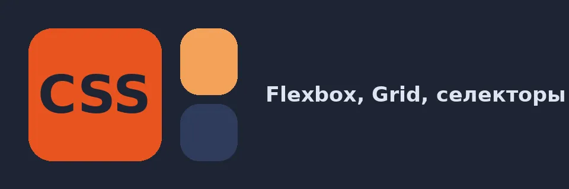

Flexbox Froggy
FlexboxДвадцать четыре уровня на justify-content, align-items и flex-direction.
Открыть сервис
CSS лучше всего учится на практике: изменили правило и сразу увидели результат. Эти сервисы тренируют раскладку, селекторы и точность.
Двадцать четыре уровня на justify-content, align-items и flex-direction.
Открыть сервисУровни на grid-column, grid-row и grid-area.
Открыть сервисВыбирайте тарелки и еду с помощью селекторов.
Открыть сервисВоспроизведите картинку минимальным кодом и получите очки.
Открыть сервисСравнение всех сервисов смотрите на странице «Сравнение».
CSS отвечает за внешний вид страницы: расположение блоков, цвета, отступы и адаптивность. Игровые сервисы тренируют именно те темы, которые на практике вызывают больше всего трудностей: выравнивание элементов, построение сеток и точный выбор нужных элементов через селекторы.
Занимайтесь по 20-30 минут в день и каждый раз записывайте свойства, которые показались сложными. Потом попробуйте применить их в собственной вёрстке.
Совет